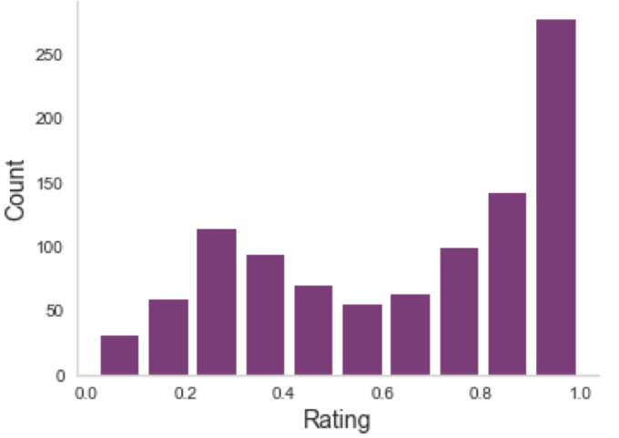
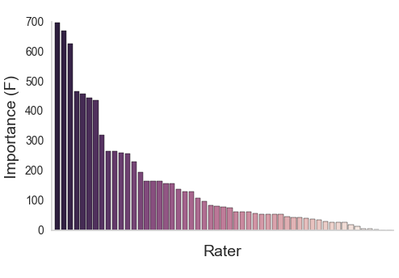
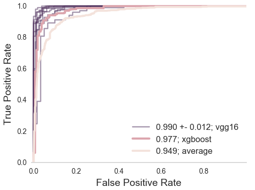

The era of brain observatories
Challenges and opportunities for computational neuroscience
October, 4th 2018
BRAIN Initiative Working Group 2.0 Workshop
Ariel Rokem, The University of Washington eScience Institute
Follow along at:


What is the value of data sharing?
Reproducibility
Reproducibility
What is the value of data sharing?
Reproducibility
Extensibility
Extensibility
Extensibility
What is the value of data sharing?
Reproducibility
Extensibility
Data-driven discovery
Observatory-driven science
 By Donald Pelletier
[
By Donald Pelletier
[ By
By {kind=link}
{kind=link}
The era of "brain observatories"
Allen Institute for Brain Science
Human Connectome Project (HCP),
(2012-2015), N = ~1,200
Healthy Brain Network (HBN),
(2016--), N = ~10,000
Adolescent Brain Cognitive Development,
(2016--), N = ~10,000
UK Biobank,
(2018--), N = ~500,000
Addressing the challenges:
Open-source software: Networks of collaboration
Internet-age science: Networks for data discovery, exploration and analysis
Sociotechnical challenges: Networks of people and ideas
Open-source software as a complement to large open datasets


What are the requirements?
Bring the compute to the data
Scalable computing
Provide useful interfaces
Facilitate interoperability
Control access
The solution
Expert => results
Expert => training data => machine learning => results
But: for many tasks, not enough training data
=> Amplify labeled data-sets with citizen science
Expert => citizen science => training data => machine learning => results
Scaling expertise with citizen science
Anisha Keshavan

Jason Yeatman
Example
Quality control of T1-weighted images

https://braindr.us

Braindr
Are you at work but feel like playing Tinder? Why not play braindr (https://t.co/yXw191Q7Hy) instead, and help neuroscientists rate the quality of brain images? Swipe left to fail bad quality images! Built with @vuejs and @Firebase #citizenscience pic.twitter.com/tpI9Y3UKOb
— anisha (@akeshavan_) February 7, 2018
Multiple ratings per image

But often, no agreement
Aggregating across raters
XGBoost (Chen & Guestrin, 2016) Aggregating across raters

Aggregating across raters

Aggregating across raters

How do we scale this up?
Scaling expertise using citizen scientist ratings

Scaling expertise using citizen scientist ratings
Challenge: improved data exploration and data sharing
Jason Yeatman

Adam
Richie-Halford
Josh Smith
Anisha
Keshavan
Results from large datasets are hard to understand
Hard to communicate
Hard to reproduce
Data sharing is not incentivized and is not easy enough


Amyotrophic Lateral Sclerosis (ALS)

Classify patients based on the tissue properties in this part of the brain
Random Forest algorithm => 80% accuracy
How would we extend this finding?
AFQ-Browser
A web-based application
Builds a web-site for a diffusion MRI dataset
Automatically uploads the website to Github
https://yeatmanlab.github.io/Sarica_2017
Exploratory data analysis
Enhances published results
Linked visualizations facilitate easy exploration
Enables new discoveries in old datasets
Automatic data sharing

Further exploration
Summary
Exploratory data analysis
Automated data sharing
Dimensionality reduced data in tidy table format
Extending published results
Adam Richie-Halford

Noah Simon
Jason Yeatman
Diffusion MRI data has group structure
Logistic regression
But in our case p (number of variables) >> n (number of subjects)
Sparse Group Lasso
Enforces sparsity both at the group level and the within-group level
Subsumes the Lasso (λ1 = 0)
And the Group Lasso (λ2 = 0)
But more meta-parameters
Accurate classification and feature detection
Classification accuracy of ~84% (AUC of 0.9)
Top 10 features selected include CST
Multi-neuron recordings also have group structure
Challenges
Methods that work in standard use may not apply to large datasets
=> Train machine learning algorithms to replace expert decision making
Tools are needed for data exploration and transparent sharing of results
=> Build browser-based applications for exploratory data analysis and data sharing
Algorithms are needed to extract information from complex high-dimensional data
=> Translate statistical techniques into practice in neuroscience
Sociotechnical structures are strained: collaboration, publication, training
=> Open source software collaborations and science-focused hack weeks
Open source software is a necessary complement to brain observatories
Required for reproducibility
Enables building on previous work
https://github.com/uw-biomedical-ml/irf-segmenter
https://github.com/uw-biomedicasl-ml/oir
Braindr:
https://github.com/akeshavan/braindr-analysis
AFQ-Browser:
https://github.com/yeatmanlab/pyAFQ
https://github.com/yeatmanlab/AFQ-Browser
Sparse Group Lasso:
https://github.com/richford/AFQ-Insight
Open source diffusion MRI
Comprehensive
Thoroughly tested
Well-documented
Open to users

Open to contributors
Distributed collaboration

Challenge: training
Methods in data science are rapidly changing
Learning often require substantial hands-on experience
=> Hack weeks
Week-long events
Combination of learning and project work
Participant driven
Astrohackweek
Neurohackweek
Geohackweek
A fine balance of pedagogy and hacking
Neurohackademy
A Summer Institute in Neuroscience and Data Science (=> 2021)

Thanks!
Adam Richie-Halford
Josh Smith
Noah Simon
Jason Yeatman

Contact information